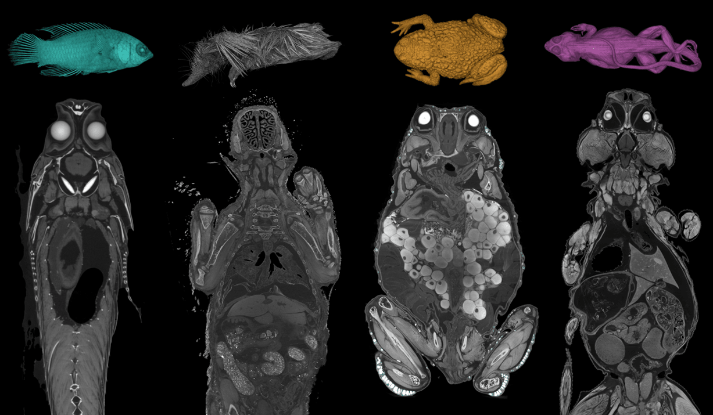

Pre-scan

DiceCT
Lab protocols for using diffusible iodine-based contrast-enhanced CT to stain natural history specimens for soft tissue imaging.
Here are some resources to help others generate and process 3D datasets.
Pre-scan
Lab protocols for using diffusible iodine-based contrast-enhanced CT to stain natural history specimens for soft tissue imaging.
Scanning

Resources for CT scanning and reconstruction I have authored/co-authored.
Post-scan

Enhancement, segmentation, and visualisation of CT scan data.
Post-scan

Working with meshes to create interactive 3D models.
Get in touch with me if you would like to request a 3D imaging resource or arrange to discuss CT projects!
Send me an email